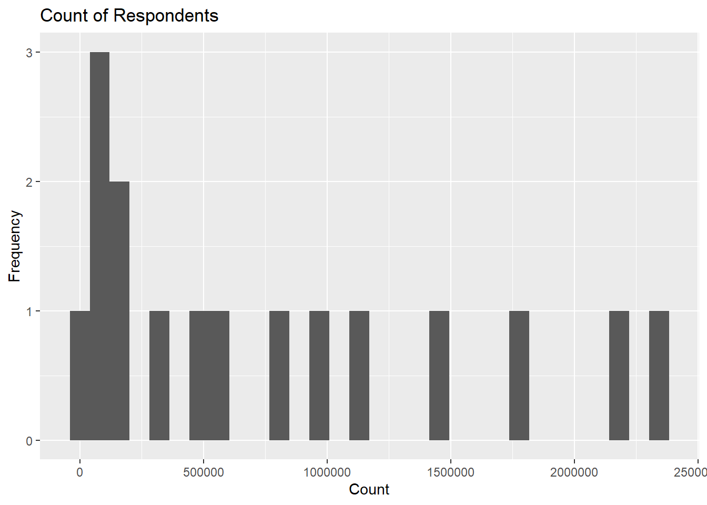
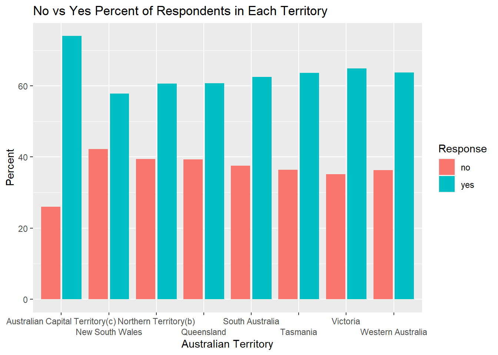
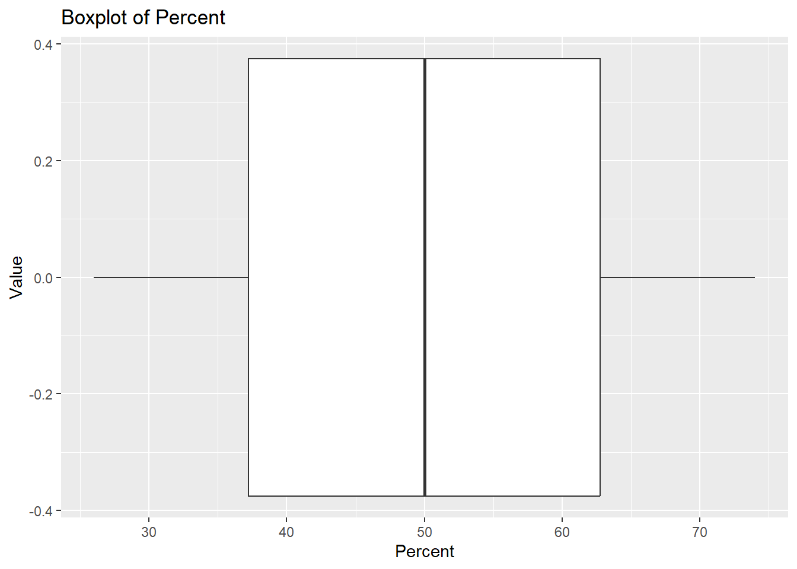

| territory | resp | count | percent |
|---|---|---|---|
| New South Wales | yes | 2374362 | 57.8 |
| New South Wales | no | 1736838 | 42.2 |
| Victoria | yes | 2145629 | 64.9 |
| Victoria | no | 1161098 | 35.1 |
| Queensland | yes | 1487060 | 60.7 |
| Queensland | no | 961015 | 39.3 |
Challenge 2
Challenge 5
Dataset australian_marriage_tidy.csv
Today we’ll be looking at the Australian marriage dataset.
Here we have preview of the data available to us. The territory of the respondent is given, as well as the respondent’s answer and the count of people who answered either yes or no. We’re going to create two graphs, one uni-variate and one bivariate.
As you can see here, I have generated three graphs of the available data by manipulating them carefully. The first table titled aum1 is the original table. aum2 is the table I pivoted with the data to more accurately compare percents of people’s responses per territory.
| Territory | Response | Count | Percent |
|---|---|---|---|
| New South Wales | yes | 2374362 | 57.8 |
| New South Wales | no | 1736838 | 42.2 |
| Victoria | yes | 2145629 | 64.9 |
| Victoria | no | 1161098 | 35.1 |
| Queensland | yes | 1487060 | 60.7 |
| Queensland | no | 961015 | 39.3 |
| South Australia | yes | 592528 | 62.5 |
| South Australia | no | 356247 | 37.5 |
| Western Australia | yes | 801575 | 63.7 |
| Western Australia | no | 455924 | 36.3 |
| Tasmania | yes | 191948 | 63.6 |
| Tasmania | no | 109655 | 36.4 |
| Northern Territory(b) | yes | 48686 | 60.6 |
| Northern Territory(b) | no | 31690 | 39.4 |
| Australian Capital Territory(c) | yes | 175459 | 74.0 |
| Australian Capital Territory(c) | no | 61520 | 26.0 |
| Territory | No | Yes |
|---|---|---|
| New South Wales | 42.2 | 57.8 |
| Victoria | 35.1 | 64.9 |
| Queensland | 39.3 | 60.7 |
| South Australia | 37.5 | 62.5 |
| Western Australia | 36.3 | 63.7 |
| Tasmania | 36.4 | 63.6 |
| Northern Territory(b) | 39.4 | 60.6 |
| Australian Capital Territory(c) | 26.0 | 74.0 |
Using these tables I generated a histogram showing the number of respondents who particicpated, a bar graph comparing the respondent’s answers based on territory, and a boxplot of the percent of people’s responses. Overall, the boxplot shows that the mean percent of respondents for an answer from each territory is roughly 50%.
`stat_bin()` using `bins = 30`. Pick better value with `binwidth`.

